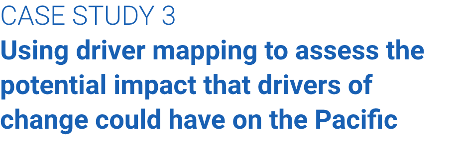
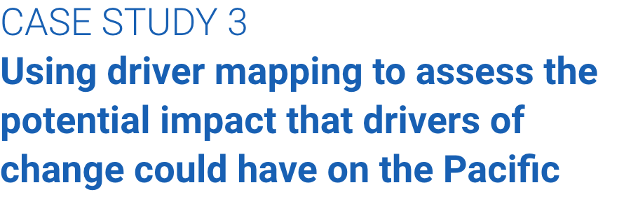

PATHFINDER
a toolkit to imagine
and create futures


After completing the horizon-scanning activity, we used driver mapping with 40 of the original 60 participants. The 13 categories of drivers of change identified during the horizon-scanning activity were used for the driver mapping (see case study 1). Driving mapping enabled us to assess the potential impact that these categories of drivers of change could have on the Pacific and SPC, and how certain we could be that these effects would materialise.
CASE STUDY 3
Using driver mapping to assess the potential impact that drivers of change could have on the
Pacific
Figure 3:
Example of an impact–(un)certainty matrix, used to map drivers of change
Source: SPC and University of Queensland Centre for Policy Futures
What we did
We used Conceptboard for this exercise. Over 90 minutes, our participants worked in small groups to
synthesise, categorise and prioritise the 13 categories of drivers of change, based on the potential
impact they could have on SPC over the next 10 years, and the level of certainty that these effects would
materialise.
The small groups agreed where to plot each category of driver of change on an
impact–(un)certainty matrix (see figure 3). To choose the plot position, the group first considered how big an impact the category of driver of
change would have on SPC. This is represented on the horizontal axis. Then they considered how certain
they were that this category of driver of change would affect SPC. This is represented on the vertical
axis.
For this activity, we were guided by these questions:
Each category of driver of change fell into one of four quadrants:


What happened
The groups reflected on the drivers in each quadrant and their implications for SPC’s strategy. This
helped to distil the core drivers of change to focus on our strategic plan. For example, participants
identified that social change, environment health and strategic recovery are significant trends (high
impact and high certainty), and that interconnected systems, funding and independence, and conflicting
priorities are critical uncertainties (high impact but low certainty).
What we learnt
Driver mapping allows stakeholders to see what forces, outside their own experiences and expertise, are
driving change. This encourages trans-disciplinary thinking rather than siloed thinking. We found this
tool is a good way for groups to start talking. The process of reaching consensus on where to place the
driver on the matrix, and having to justify that decision, meant the groups had more in-depth discussions
than when they were simply identifying the drivers.
Which significant trends should drive SPC’s agenda (“significant trends”)?
What are the
critical uncertainties we need to explore to avoid our plans being disrupted (“critical uncertainties”)?
What
situational information do we need to be aware of (“important context”)?
Which drivers can
we afford to monitor and see if they materialise (“wait and watch”)?
Significant trend (high impact and high certainty)
Critical uncertainty (high impact but low
certainty)
Important context (low impact but high certainty)
Wait and watch (low impact and low
certainty)
2.
3.
4.

The groups discussed each driver of change and noted why
they had chosen its place on the matrix.
add other drivers, if they felt their ideas were not represented
in the list they were given.
this driver will impact SPC
this driver will impact SPC


 
